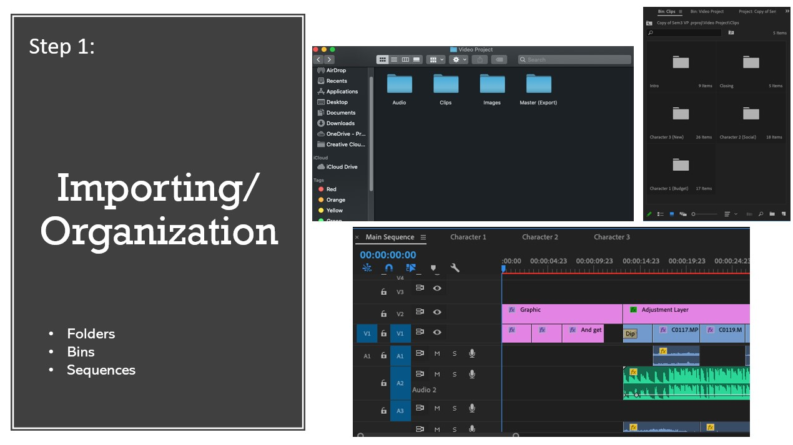

CYCLEFE
Problem:
The purpose of this project is to create an interactive video for the purposes of promoting the new coffee place- Cycflefe.
____________________EMOTIONS
we worked closely with emotions and motivations and more precisely- what feelings we would like to evoke in the user when he watched the video. Since our focus audience was students, our main aim was to win their attention by empathy. So we put 3 characters in situations that really relatable for the majority of students.
_______________________________SHOOTING
We tried to use variety of shooting angles to provide variety to the user and convey different type of feelings depending on the shot.
____________________________________________________________________________EDITING
We were editing with Adobe Premiere Pro and kept everything into sequences and bins to keep it more organized
